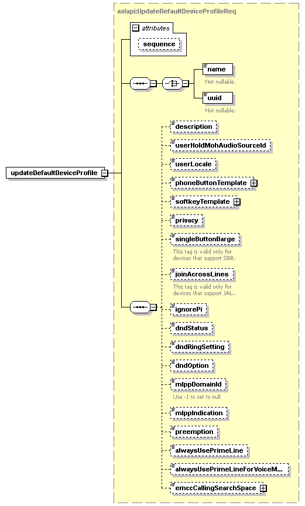

| diagram |  | ||||||||||||
| namespace | http://www.cisco.com/AXL/API/10.5 | ||||||||||||
| type | axlapi:UpdateDefaultDeviceProfileReq | ||||||||||||
| properties |
|
||||||||||||
| children | name uuid description userHoldMohAudioSourceId userLocale phoneButtonTemplate softkeyTemplate privacy singleButtonBarge joinAcrossLines ignorePi dndStatus dndRingSetting dndOption mlppDomainId mlppIndication preemption alwaysUsePrimeLine alwaysUsePrimeLineForVoiceMessage emccCallingSearchSpace | ||||||||||||
| attributes |
|
||||||||||||
| source | <xsd:element name="updateDefaultDeviceProfile" type="axlapi:UpdateDefaultDeviceProfileReq"/> |